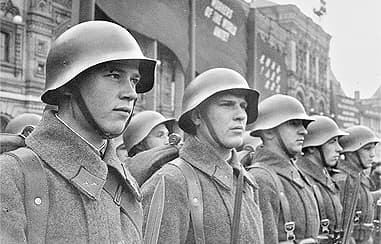
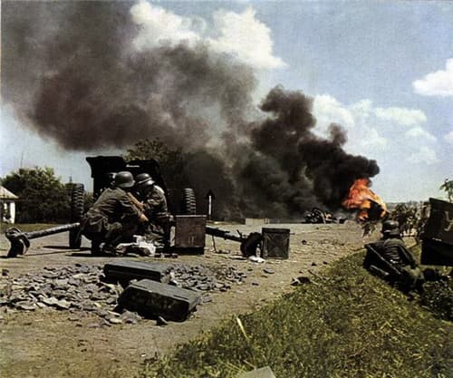

Лужский рубеж. Большой Сабск.
Алексей Валерьевич Исаев
Иной 1941
От границы до Ленинграда
Передовой отряд 1-й танковой дивизии двигался к низовьям Луги 14 июля практически по пятам 6-й танковой дивизии — другой дороги просто не нашлось. Продираясь по плохим дорогам, отряд вышел к низовьям Луги, также «подвергаясь сильным ударам противника с воздуха». Для движения по разбитой дороге приходится настилать сотни метров гатей и засыпать воронки авиабомб. Немцев подгоняло вперед сообщение воздушной разведки о том, что мост через Лугу у Сабска находится в неповрежденном состоянии. Однако под Сабском оборону успело занять пехотное училище им. С. М. Кирова. Когда около 20.00 (берлинского времени) немецкий отряд подходит к мосту, тот взлетает на воздух прямо на глазах опешивших мотострелков.
Капитан В. Сергеев, командир роты училища, вспоминал: «Я не знаю, сколько Раввин заложил взрывчатки, видно, с „запасом“. Грохот раздался неимоверный, даже у меня заложило уши. В воздух, как спички, подняло доски, бревна, разные обломки. Мост исчез в дыму и пыли. От падающих обломков бурлила, поднималась фонтанами вода. Потом все стихло. Успокоилась Луга. Моста как и не было. Остались торчать несколько свай, вниз по течению плыли обломки. Некоторое время немцы молчали. Молчали и мы. А потом началось такое, что и передать трудно. Артиллерия, минометы, пулеметы, автоматы — все, что стреляло, било по нашему переднему краю».
Немцам приходится переходить Лугу вброд под огнем. Как записано в ЖБД 1-й танковой дивизии, «после тяжелого боя, оттеснив хорошо окопавшегося противника», отряд захватывает небольшой плацдарм в районе Бол. Сабска. Этот плацдарм был выше по течению Луги, чем плацдарм Рауса у Поречья. Советские данные отрицают захват плацдарма под Сабском с первого раза, считается, что первую атаку курсанты отбили. Если бы в этот момент почерневшие от дорожной пыли солдаты и офицеры 1-й танковой дивизии подняли головы, они бы смогли разглядеть в небе истребители с крестами на крыльях. Реакцией на процитированную выше жалобу германских командиров в вышестоящие инстанции стала высылка в район действий передовых частей корпуса Рейнгардта истребителей из JG54 вечером 14 июля. Это сразу обошлось 41-й авиадивизии в 3 СБ сбитыми и 1 СБ, не вернувшимся с боевого задания в районе Сабска. На эти три самолета могут претендовать пилоты 4, 8 и 9-го отрядов JG54. Советские истребители заявили о двух сбитых Me-109, но пока данные противника эту заявку не подтверждают. Также атаке истребителей подвергся разведчик Пе-2 отдельной разведгруппы в районе Гдова. Однако эта вспышка активности Люфтваффе на большом удалении от своих аэродромов принципиально изменить обстановку не могла.

15 июля к ударам по занятым немцами плацдармам в районе Ивановского и Сабска подключилась авиация Балтийского флота. Истребители ВВС КБФ вылетали на задание с подвешенными эрэсами. Над плацдармами и на подступах к ним разверзлись небеса. Бомбардировщики СБ 41-й авиадивизии бомбили и поливали огнем турельных пулеметов наконец-то остановившиеся немецкие части. В ЖБД 1-й танковой дивизии появляются апокалипсические нотки: «После того как в течение ночи и в ранние утренние часы боевая группа [Крюгера] подверглась нескольким бомбежкам противника, в течение первой половины дня положение в воздухе становится почти невыносимым. Противник бомбит каждую отдельную машину, отыскивает позиции артиллерийских и зенитных орудий, разрушает воронками дорогу»[263]. Слова, которые мы привыкли слышать применительно к советским частям, не правда ли? Уже ранним утром, в 5.00, 15 июля командир дивизии генерал-лейтенант Фридрих Кирхнер получает ранение осколком авиабомбы. Командование дивизией принимает 49-летний генерал-майор Вальтер Крюгер. Как и многие немецкие танковые командиры, он был из кавалеристов. Вторую мировую войну Крюгер, впрочем, встретил командиром пехотного полка. Однако уже в феврале 1940 г. он становится командиром 1-й стрелковой бригады, проходит вместе с Кирхнером Французскую кампанию и в апреле 1941 г. получает звание генерал-майора. Вопреки утверждениям в мемуарах Рауса об эффективном огне зениток, ни 41-я авиадивизия, ни ВВС КБФ потерь 15 июля не имели. Согласно немецким документам, назначенный для ПВО плацдармов зенитный дивизион из-за пробок просто не прибыл.
С первых часов после захвата немцами плацдарма у Сабска за него развернулись жестокие бои. По немецким данным, уже утром 15 июля курсанты атаковали их при поддержке тяжелых танков. Во второй половине дня немцы атакуют и расширяют плацдарм. В ЖБД 1-й танковой дивизии отмечается: «Враг сражается исключительно упорно, его уничтожают с помощью огнеметов и в рукопашном бою». К вечеру к плацдарму под Сабском подтягивается мотоциклетный батальон дивизии, мотоциклы преодолевают дорожные условия лучше машин. Оборона плацдарма усиливается.
В Большом Сабске есть музей. Попасть можно по предварительному звонку и договоренности. http://dk.sabsk.ru/page.php?9